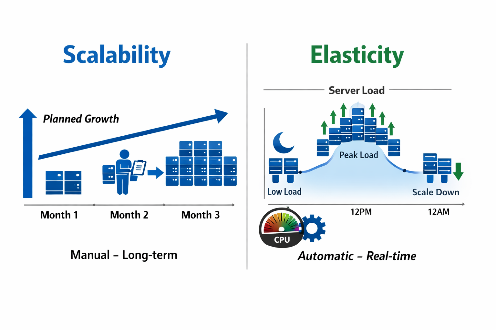

The Restaurant Analogy
Imagine you own a restaurant. Let's use this to understand scalability and elasticity:
🍽️ The Restaurant Story:
Scalability is like knowing your restaurant gets busier every holiday season, so you hire 5 more waiters in November because you expect December crowds. You planned ahead.
Elasticity is like having on-call staff who automatically show up when there's a sudden rush (maybe a tour bus stops by) and leave when things slow down. It happens automatically based on current crowd size.
What is Scalability?
Scalability is the ability of a system to handle increased load by adding resources through planned capacity expansion. It's about long-term growth and capacity planning.
Key characteristics:
- Manual or planned: You decide when to add resources based on forecasts
- Time horizon: Focuses on weeks, months, or years ahead
- Goal: Ensure you can handle expected growth

Figure 1: Scalability (planned growth) vs Elasticity (automatic adjustment)
What is Elasticity?
Elasticity is the ability to automatically add or remove resources in real-time based on current demand. It's about right-sizing your infrastructure dynamically.
Key characteristics:
- Always automatic: Triggered by metrics like CPU usage or request count
- Real-time: Responds to spikes and drops as they happen
- Goal: Optimize both performance and cost
💡 Key Difference: Scalability asks "Can we grow?", Elasticity asks "Can we grow AND shrink automatically?"
Real-World Examples
Scalability Example: Your e-commerce site has 2 servers handling 10,000 daily visitors. Analytics show traffic growing 20% monthly. You add 3 more servers next month to prepare for growth.
Elasticity Example: Your video streaming service runs on 5 servers normally. When a popular show releases, AWS Auto Scaling automatically launches 15 more servers. After 2 hours, viewership drops and Auto Scaling terminates 12 servers, keeping only 8 running.
Side-by-Side Comparison
| Feature | Scalability | Elasticity |
|---|---|---|
| Definition | Can grow to handle workload | Automatically adjusts to current demand |
| Timing | Planned/Manual | Real-time/Automatic |
| Trigger | Human decision | Metric-based (CPU, memory, requests) |
| Direction | Usually grows (scale up/out) | Grows AND shrinks (bi-directional) |
| Goal | Capacity management | Cost + Performance optimization |
| Example | Adding servers for holiday season | Auto Scaling based on CPU usage |
AWS Implementation
In AWS:
- Scalability: You manually upgrade an EC2
instance from
t3.mediumtot3.large, or add more instances to your load balancer - Elasticity: You configure AWS Auto Scaling to launch instances when CPU exceeds 70% and terminate them when it drops below 30%
✅ Quick Memory Trick:
Scalability = "Can we handle MORE?" (planned growth)
Elasticity = "Can we handle MORE and LESS automatically?" (automatic adjustment)